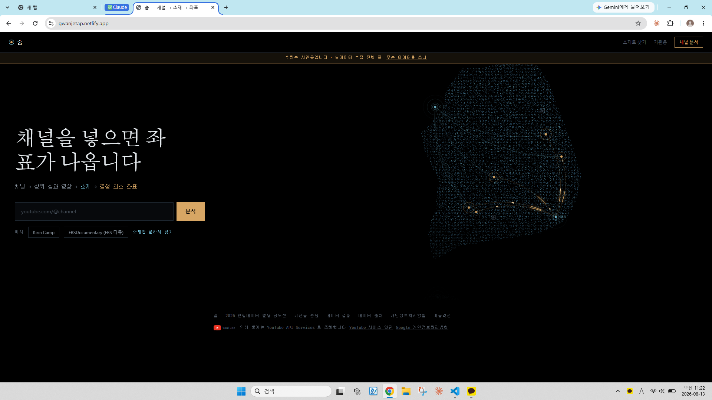
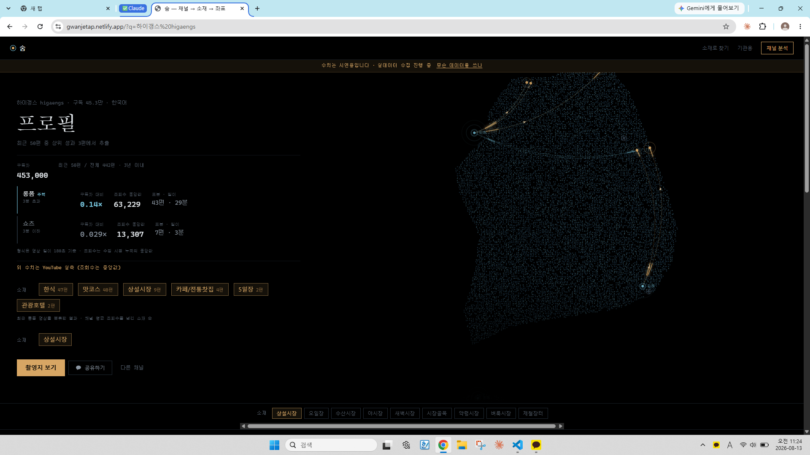
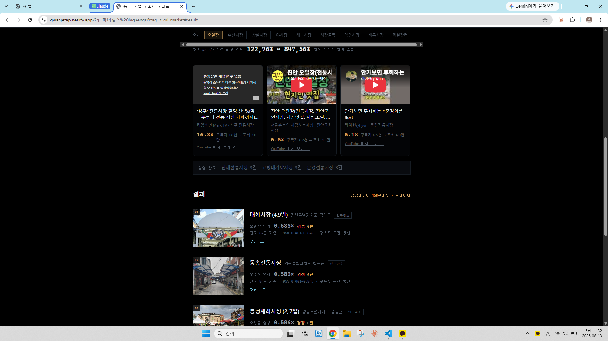
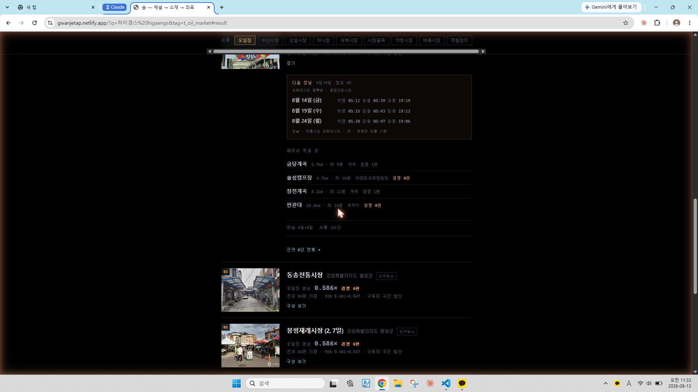
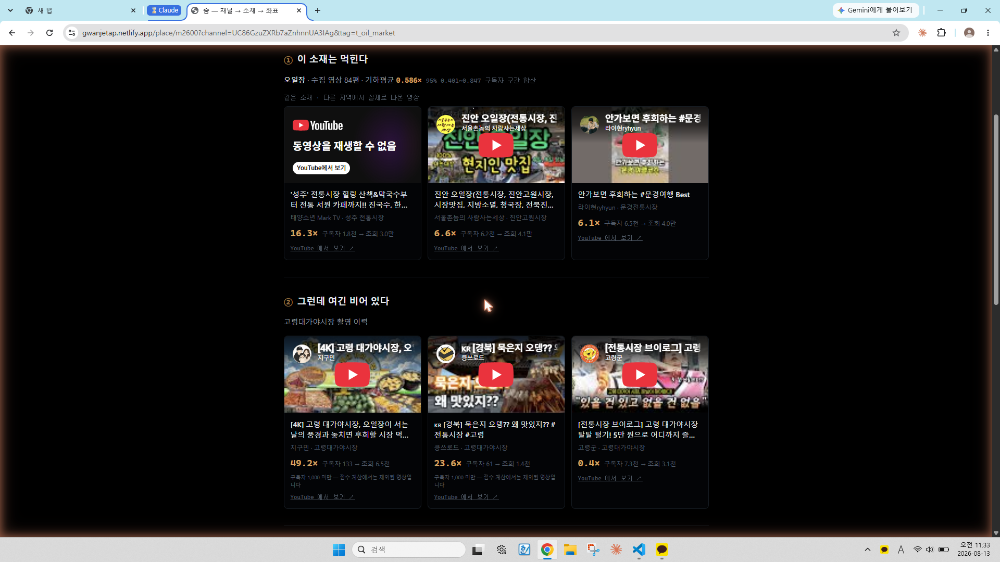
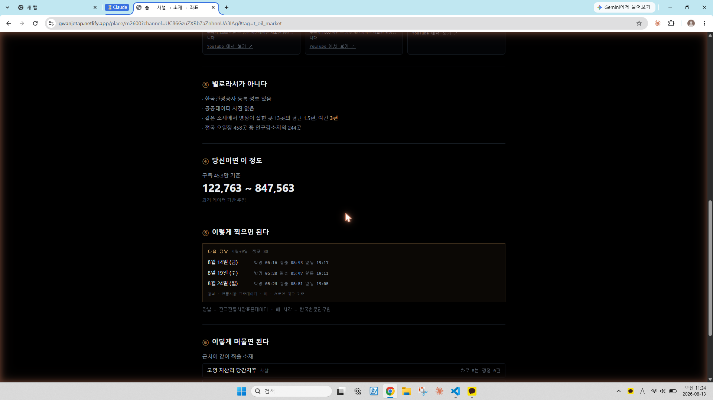
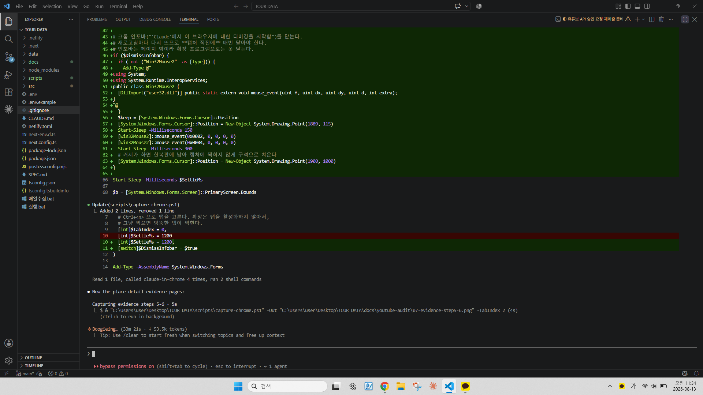
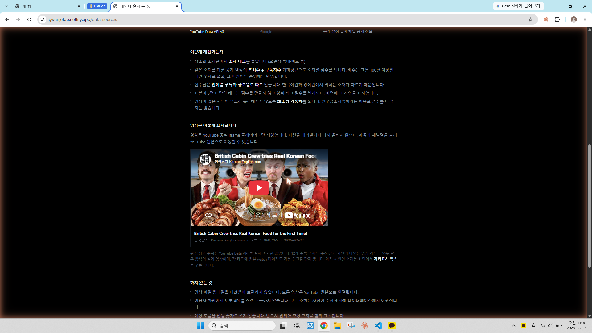
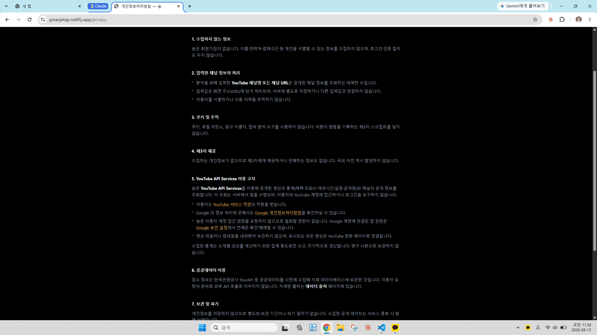

Step-by-step visual reference of the use case, the end results, and the complete functionality of the API client using YouTube API Services.
SOOM helps video creators in Korea find places to film in depopulating rural regions. A creator enters their own YouTube channel. We look up that channel's public statistics, work out which subjects the channel actually performs well on (traditional five-day markets, closed schools, islands, valleys…), and then list public-data locations across Korea where that same subject can be filmed — ranked so that places with little existing video coverage surface first.
YouTube API Services supply exactly two things: public channel statistics for the creator who is asking, and public video statistics used to compute an aggregate performance score per subject. Everything else on screen comes from Korean public open data (the national tourism API, traditional-market registry, closed-school registry, sunrise/sunset tables).
| API call | Purpose in the product | Seen in step |
|---|---|---|
channels.list |
Subscriber count and uploads playlist id for the channel the creator entered. | Step 2 |
playlistItems.list |
Recent uploads of that channel (used instead of search.list — 1 unit rather than 100). |
Step 2 |
videos.list |
View count, duration, description (for chapter timestamps), 50 ids per call. | Steps 2, 3, 5 |
search.list |
Discover candidate videos per subject and per region name. This is the call the quota increase is for. | Steps 3, 5 |
commentThreads.list |
Identify the filming location named by viewers when the title does not name it. | Step 5 (attribution) |
no API call yet The headline reads "Enter a channel and you get coordinates". The input accepts a channel URL, handle, or name. The two buttons below are example channels. The footer carries YouTube branding and links to the YouTube Terms of Service and the Google Privacy Policy.

channels.list + playlistItems.list + videos.listchannels.list playlistItems.list videos.list The creator's channel is resolved and its public statistics are shown. Reading the screen top to bottom:
channels.list).videos.list).
search.list videos.list The creator picked the subject "five-day market". This block is the end result of the collection the quota increase pays for.
youtube-nocookie.com iframe player, each with a
"View on YouTube ↗" link back to the original watch page. The figures under each
card are the measured ones: 16.3× (1,800 subscribers → 30,000 views),
6.6× (6,200 → 41,000), 6.1× (6,500 → 40,000).
public open data only Expanding a card shows what a creator needs in order to actually go: the next market days with civil-twilight, sunrise and sunset times (from the Korean tourism and astronomy public datasets), other subjects within driving distance, and the number of competing videos for each. No YouTube data on this panel except the competing-video counts.

search.list videos.list commentThreads.list This is the deepest screen and the one where YouTube data is most visible.
Attributing a video to a location is what commentThreads.list is for.
Korean travel videos frequently name the place only in the comments, and
English-language ones usually do not name it in the title at all.

videos.list ③ answers "is it empty because it is bad?" with public-data facts: it is registered with the Korea Tourism Organization; there is no public-data photo; the 13 locations of this subject that do have coverage average 1.5 videos while this one has 3; nationally 244 of 458 five-day markets are in officially designated depopulating districts.
④ is the projected reach for this specific channel, again as a range (122,763 ~ 847,563) with the disclaimer "estimate based on past data". We never publish a single predicted view count.

public open data only The market opens on days ending in 4 and 9; the next three dates are listed with civil twilight, sunrise and sunset for each, sourced from the Korea Astronomy and Space Science Institute. Below, six other filmable subjects within a 40 km radius, each with its competing-video count. The provenance line is printed under each block.

/data-sourcesLinked from the footer of every page. It lists every data source including "YouTube Data API v3 — Google", explains the scoring method, and demonstrates the official embedded player with a link to the watch page. The section headed "What we do not do" states: we do not download or store video files or thumbnails; the front end makes no direct external API calls; projected reach is never a single number; there is no sign-up, login, advertising or behavioural tracking. The page links to the YouTube Terms of Service and the Google Privacy Policy.

Section 5 is the required disclosure. It states that SOOM uses YouTube API Services to retrieve public video statistics (title, view count, duration, description, publish date) and public channel information; that retrieval is performed server-side in batches and never asks the user to log in or grants us access to their YouTube account; that users are bound by the YouTube Terms of Service; that Google's handling of information is covered by the Google Privacy Policy; that because we request no user account access there is nothing to revoke, with a link to Google security settings; and that we retain no video files or thumbnails, refreshing collected statistics periodically rather than keeping a permanent copy. Sections 1–4 confirm there is no sign-up, no cookies, no tracking and no third-party sharing.

Collection is a set of Node.js command-line scripts run on a schedule, never from
the browser. Each run writes its unit consumption to a yt_quota table
keyed by date, because a process that forgets consumption restarts the count from
zero on every re-run and overshoots the daily cap.
| Command | Calls used | Cost |
|---|---|---|
npm run yt:channel -- @handle | channels.list → playlistItems.list → videos.list | 3 units per 50 videos |
npm run yt:search | search.list → videos.list | 100 units per page |
npm run yt:comments | commentThreads.list | 1 unit per video |
Current contents of our database, collected entirely within the default 10,000 units/day:
| Table | Rows |
|---|---|
| Videos (public metadata only) | 42,018 |
| Channels (public statistics only) | 2,542 |
| Comments (used for location attribution) | 21,867 |
| Video → location attributions | 2,978 |
| Filming locations from Korean public open data | 50,033 |
search.list wherever a cheaper call exists.
Fetching a channel's recent uploads via search.list costs 100 units;
going through channels.list → playlistItems.list costs 3.
Measured on our own data, that is 50 videos for 3 units. The quota increase is
needed only for the one job that genuinely requires search: discovering candidate
videos for subjects and regions we have never seen.
search.list costs 100 units per page. Under the default 10,000/day that
is 100 searches per day. The initial corpus needs roughly 700 distinct queries
(229 Korean municipalities × 3 phrasings, 66 subjects, ~30 English queries) at
3 pages each — about 210,000 units — which would take over a month of
uninterrupted collection with no margin for retries.
Scores must be computed separately per language. In our sample, traditional markets score 4.1× for English-language videos and 0.6× for Korean-language ones; merging the two collapses every subject toward the mean and makes the recommendation meaningless. Both language corpora therefore have to be collected rather than sampled. Our English-language corpus is currently the gap: enter an English-language channel today and the screen honestly reports "rank only — insufficient sample".
At 300,000 units/day the initial collection completes in about two days, after which ongoing use falls back to roughly 10,000 units/day for periodic re-scoring.
youtube-nocookie.com iframe player, and every card carries a link back to the watch page. Uploader embedding settings are respected, not circumvented./data-sources.